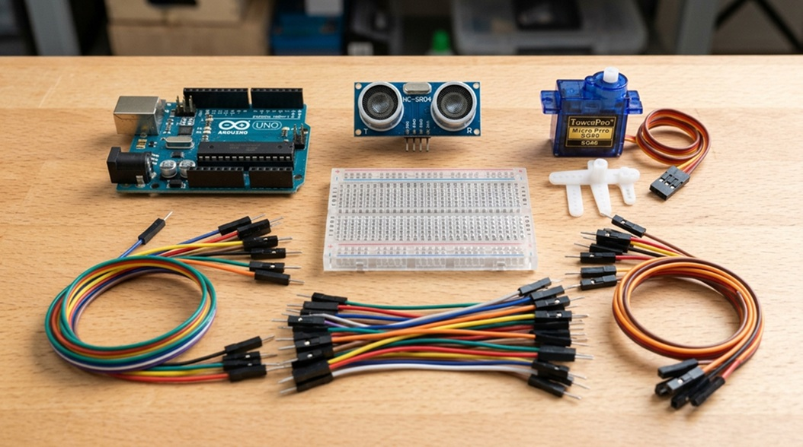
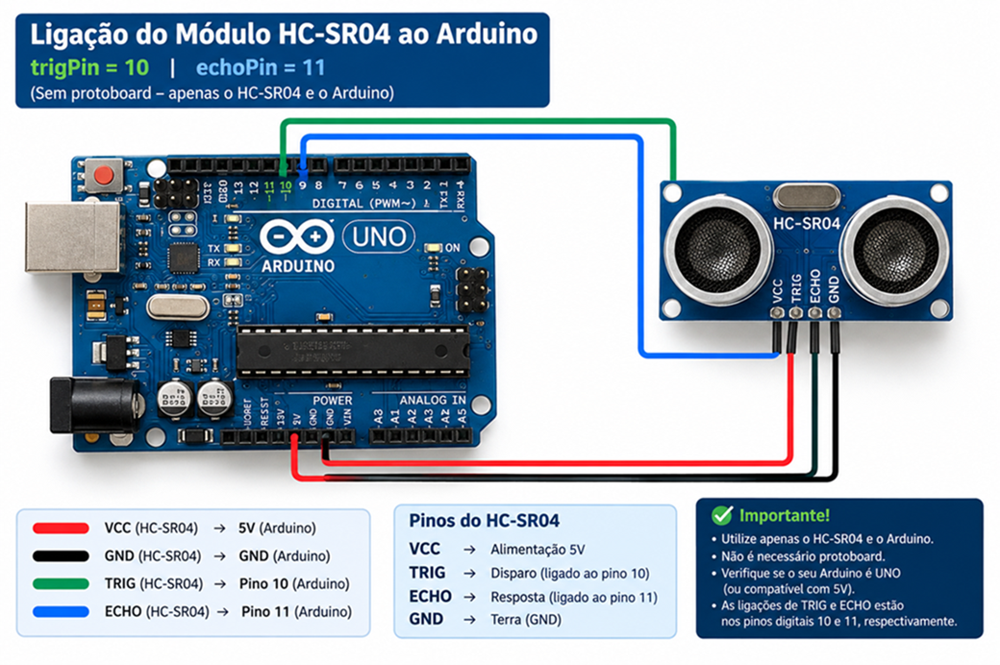
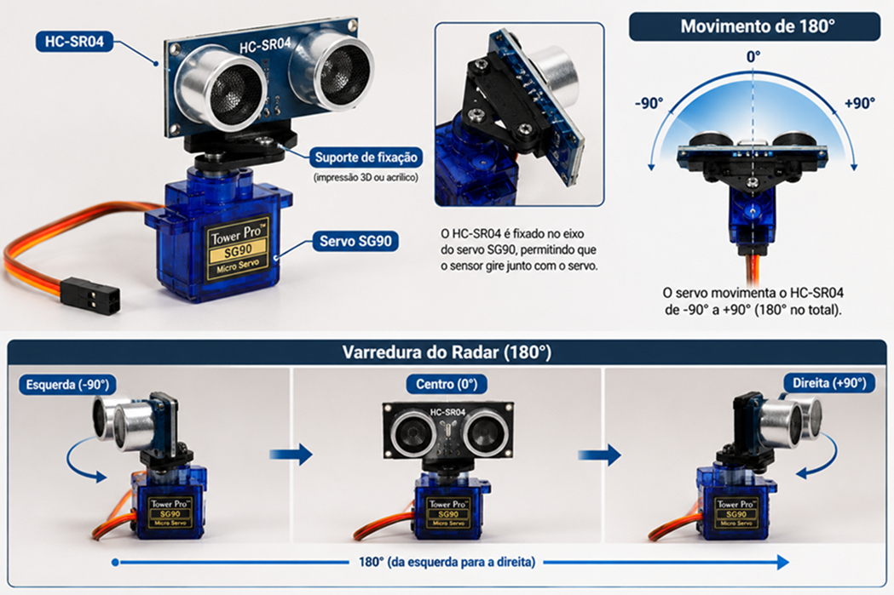
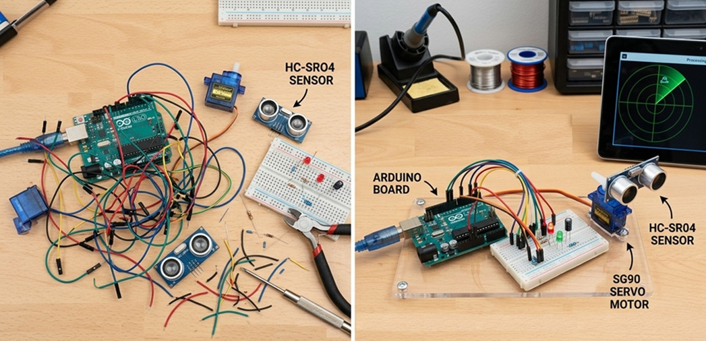

📡 RADAR ULTRASSÔNICO
COM ARDUINO + PROCESSING
Documento Didático Fase 1: O Básico 100% Funcional
Aviso
Este documento não foi escrito para ser “consultado”. Foi escrito para ser lido com o Arduino na mão e o Processing aberto do lado. Se você ler inteiro sem rodar nada, o radar continua não girando. E aí a culpa não é do servo.
🎯 1. O que este projeto é (e o que ele não é)
1.1 Em uma frase
Um servo motor varre um
sensor ultrassônico
de 15° a 165° e de volta; o sensor mede distância; um Arduino envia
os pares
ângulo,distância. pela serial; um sketch em Processing
desenha um radar verde que faz fade e mostra o objeto mais
próximo em vermelho.
1.2 O que ele É
- Um sistema embarcado + visualização desktop completo.
- Um exercício de protocolo serial simples, tolerante a falhas e fácil de depurar.
- Um projeto de cinemática de servo, física de ultrassom e geometria polar ao mesmo tempo.
- Um material que cabe em uma aula dupla de robótica e sobra tempo para o café.
1.3 O que ele NÃO é
- Não é LiDAR. Não tem precisão milimétrica.
- Não compensa temperatura (a fase 1 usa 340 m/s fixo e isso é uma escolha pedagógica, não um bug).
- Não tem filtro de Kalman, nem fusão de sensores, nem ROS. É fase 1. Respira.
💡 Por que a fase 1 ignora a temperatura?
Porque o HC-SR04 usa internamente uma referência de 340 m/s, e o
código do Arduino usa
0.034 cm/µs. Em 0 °C a velocidade real cai para ~331
m/s, e em 40 °C sobe para ~355 m/s até 4% de variação. A fase 1
troca essa precisão por simplicidade pedagógica.
A fase 2 pode adicionar um DS18B20 e corrigir a fórmula. Mas isso
é conversa para depois.

🧠 2. Hardware: os três mosqueteiros
2.1 HC-SR04 o morcego de bolso
Pinos usados no projeto: trigPin = 10,
echoPin = 11.
O HC-SR04 tem quatro pinos: VCC, GND, Trig e Echo. O funcionamento é um eco de morcego:
- O Arduino manda um pulso HIGH de 10 µs no pino Trig.
- O módulo dispara 8 ciclos de ultrassom a 40 kHz.
- O pino Echo fica HIGH pelo tempo que o som leva para ir até o obstáculo e voltar.
- O Arduino mede esse tempo e aplica:
d = (t × v) / 2
O divisor 2 existe porque o som vai e volta. O
código usa v = 0.034 cm/µs (equivalente a 340 m/s).
🧛 Detalhe de mestre: sem timeout, o
pulseIn() pode ficar bloqueado por até
1 segundo quando não há eco. O código usa
pulseIn(echoPin, HIGH, 30000) 30 ms, o equivalente a
~5 metros de ida e volta. Isso é
resiliência de sistema, não frescura.

2.2 SG90 o servo que só quer um pulso
Pino usado: servoPin = 12.
O SG90 é um servo de 180°. Ele não entende “graus”. Ele entende largura de pulso:
| Largura do pulso | Ângulo |
|---|---|
| 0,5 ms | 0° |
| 1,0 ms | 45° |
| 1,5 ms | 90° |
| 2,0 ms | 135° |
| 2,5 ms | 180° |
A cada 20 ms chega um pulso; o que importa é
quanto tempo ele fica em HIGH. A biblioteca
Servo do Arduino abstrai isso:
myServo.write(90) já gera o pulso de 1,5 ms.
⚠️
Por que o projeto centraliza em 90° antes de começar?
Porque o servo pode estar em qualquer posição ao ligar. Um
“tranco” de 0° para 165° é feio, esquenta o motor e assusta o
cachorro.
myServo.write(90); delay(300); é
elegância mecânica.

2.3 Arduino o maestro
O Arduino Uno faz três coisas ao mesmo tempo (não literalmente, mas quase):
-
Gera PWM para o servo (via biblioteca
Servo). - Dispara e lê o HC-SR04.
-
Envia
"ângulo,distância."pela serial a 9600 bps.
🎓 BNCC EM13CO16 “Desenvolver projetos com robótica, utilizando artefatos físicos ou simuladores.” Este é o coração do projeto: um artefato físico que integra atuador (servo) e sensor (ultrassom) sob controle de firmware.
🔌 3. Arquitetura do código: por que separar tanto?
O projeto tem dois lados:
| Lado | Linguagem | Responsabilidade |
|---|---|---|
| Arduino |
C++ (.ino, .h, .cpp)
|
Medir, mover o servo, enviar |
| Processing | Java (.pde + .java) |
Receber, interpretar, desenhar |
3.1 Lado Arduino: três arquivos, uma obsessão por clareza
O projeto não joga tudo no .ino. Ele separa:
-
codigo_radar.h→ declarações (pinos, protótipo,extern Servo myServo). -
codigo_radar.cpp→ implementação decalculateDistance()e a definição do servo. -
codigo_radar.ino→ fluxo (setup()eloop()).
Isso é modularidade de firmware. Em projetos
maiores, essa separação evita que o .ino vire um
pergaminho de 800 linhas que ninguém quer abrir.
3.2 Lado Processing: cada classe no seu quadrado
O sketch principal radar_independente.pde só
liga as peças:
Config → constantes (porta, baud, cores, textos)
Leitura → modelo imutável (ângulo + distância)
ParserPacote → texto → Leitura (Java puro, testável sem Processing)
SensorSerial → porta serial
Layout → geometria responsiva
RadarView → desenho do radar
InfoBar → barra inferior
Janela → maximizar/restaurar
Nenhuma classe de domínio conhece
PApplet diretamente, exceto as de visualização. Leitura,
Config e ParserPacote são
Java puro. Isso permite testar o parser com
JUnit sem abrir uma janela. É design de verdade, não só
“funciona na minha máquina”.
🎓 BNCC EM13CO01 “Explorar e construir a solução de problemas por meio da reutilização de partes de soluções existentes.” O parser de pacote, a leitura imutável e o layout responsivo são partes reutilizáveis que podem ir para qualquer projeto futuro com serial.

4. Lado Arduino, linha por linha
4.1 codigo_radar.h o contrato
#ifndef CODIGO_RADAR_H
#define CODIGO_RADAR_H
#include <Arduino.h>
#include <Servo.h>
#ifndef / #define / #endif é a
guarda de inclusão. Sem ela, se o header for
incluído duas vezes, o compilador reclama de redefinição. É o básico
que separa código de garagem de código que escala.
const int trigPin = 10;
const int echoPin = 11;
const int servoPin = 12;
Constantes de pino. const int em vez
de #define porque tem tipo, escopo e o compilador pode
otimizar.
extern Servo myServo;
extern diz: “existe um myServo em algum
lugar, não aloque memória aqui”. A
definição real fica no .cpp. Isso
evita múltiplas definições se o header for incluído
em vários .cpp.
int calculateDistance();
Protótipo. O .ino precisa saber que
essa função existe antes de chamá-la no loop(). O corpo
está no .cpp.
4.2 codigo_radar.cpp a física aplicada
#include "codigo_radar.h"
Servo myServo;
Aqui está a definição do servo. Uma única vez, em
um único .cpp.
int calculateDistance() {
digitalWrite(trigPin, LOW);
delayMicroseconds(2);
digitalWrite(trigPin, HIGH);
delayMicroseconds(10);
digitalWrite(trigPin, LOW);Sequência de disparo:
LOWpor 2 µs → garante nível baixo estável.-
HIGHpor 10 µs → requisito do HC-SR04. LOW→ o módulo dispara os 8 ciclos de 40 kHz.
long duration = pulseIn(echoPin, HIGH, 30000);
pulseIn mede o tempo em
microssegundos que o pino Echo fica em HIGH. O
terceiro argumento é o timeout: se nenhum eco
chegar em 30 ms, retorna 0. Sem timeout, o bloqueio poderia chegar a
~1 s.
if (duration == 0) return -1;
int dist = (int)(duration * 0.034 / 2.0);
if (dist < 2 || dist > 400) return -1;
return dist;
}
Fórmula:
distância = (tempo × velocidade) / 2.
0.034 cm/µs é 340 m/s. O /2.0 é ida e
volta. O filtro 2–400 cm é a faixa útil do HC-SR04.
-1 sinaliza leitura inválida e o
loop() só envia d > 0.
🎓 BNCC EF05MA19 “Resolver e elaborar situações-problema envolvendo medidas de diferentes grandezas como comprimento, massa, tempo, temperatura, capacidade e área.” Aqui o aluno converte tempo (µs) em comprimento (cm) com uma fórmula física real. Não é “regra de três de livro”: é regra de três que faz um servo parar de bater na parede.

4.3 codigo_radar.ino o loop que varre o mundo
void setup() {
pinMode(trigPin, OUTPUT);
pinMode(echoPin, INPUT);
Serial.begin(9600);
myServo.attach(servoPin);
myServo.write(90);
delay(300);
}-
trigPiné saída (Arduino dispara). -
echoPiné entrada (sensor devolve). Serial.begin(9600)→ mesma taxa do Processing.-
myServo.attach(servoPin)→ associa o objeto ao pino físico. -
write(90) + delay(300)→ centraliza com calma.
void loop() {
for (int i = 15; i <= 165; i++) {
myServo.write(i);
delay(30);
int d = calculateDistance();
if (d > 0) {
Serial.print(i);
Serial.print(",");
Serial.print(d);
Serial.print(".");
}
}
for (int i = 165; i > 15; i--) {
myServo.write(i);
delay(30);
int d = calculateDistance();
if (d > 0) {
Serial.print(i);
Serial.print(",");
Serial.print(d);
Serial.print(".");
}
}
}Duas varreduras: 15° → 165° (ida) e 165° → 15° (volta). A faixa 15–165° evita as extremidades mecânicas do SG90 e reduz o “tranco” nas bordas.
delay(30) é o
tempo de estabilização. O SG90 não é um servo
industrial: ele precisa de tempo para parar de tremer antes da
medição. 30 ms por grau é conservador e seguro.
O protocolo: "ângulo,distância."
,separa campos.-
.marca fim de pacote. O Processing usabufferUntil('.'), então cada pacote chega inteiro noserialEvent.
if (d > 0) → leituras inválidas
(-1) são descartadas. O Processing
nunca recebe lixo. Isso é
tolerância a falhas na origem.
🎓 BNCC EM13CO16 de novo: o loop() é
um projeto de robótica físico que integra atuador
e sensor em um ciclo de varredura. Não é simulação: é servo
girando, ultrassom disparando e serial enviando.
🖥️ 5. Lado Processing, linha por linha
5.1 Config.java o painel de controle
public final class Config {
private Config() {}
Classe final, construtor privado. Ninguém instancia
Config. Ninguém herda. É uma
coleção de constantes, não um objeto.
public static final int DISTANCIA_MAX = 40;Aqui está uma decisão pedagógica importante: o sensor do Arduino mede até 400 cm, mas o radar desenha até 40 cm. Por quê?
- O radar é uma visualização de curto alcance.
- 40 cm é uma mesa de robótica, um corredor, uma maquete.
-
A barra de informação mostra
--quandodistancia >= 40.
Isso não é limitação técnica. É design de interface. O radar não mente: ele define um alcance visual e trata o resto como “fora de alcance”.
public static final int RASTRO_ALFA = 4;
O segredo do rastro. A cada frame, um retângulo
preto com alpha 4 é desenhado sobre tudo. O que era verde vai
escurecendo lentamente. Quanto menor o alpha,
mais lento o desaparecimento. 4 é um
bom equilíbrio: o rastro dura alguns segundos, mas não vira uma bola
de sujeira.
🎓
BNCC Competência Geral 5 Cultura Digital:
“Compreender, utilizar e criar tecnologias digitais de informação
e comunicação de forma crítica, significativa, reflexiva e ética”.
O Config é um exemplo de
criação tecnológica intencional: cada constante é
uma decisão de design documentada, não um número mágico perdido.
5.2 Leitura.java o dado imutável
public final class Leitura {
public final int angulo;
public final int distancia;
public Leitura(int angulo, int distancia) { ... }
public boolean temObjeto() {
return distancia < Config.DISTANCIA_MAX;
}
}
Imutável. Uma vez criada, não muda. Isso elimina
uma classe inteira de bugs de concorrência: o
serialEvent cria uma nova Leitura, atribui
a ultima (que é volatile), e o
draw() lê uma referência consistente.
Ninguém modifica o dado no meio do desenho.
temObjeto() encapsula a regra:
objeto = distância < 40 cm. Se amanhã o alcance
mudar para 60, muda um lugar.
5.3 ParserPacote.java o filtro de lixo
public static Leitura interpretar(String pacote) {
if (pacote == null) return null;
String dado = pacote.trim();
if (dado.length() > 0 && dado.charAt(dado.length() - 1) == Config.DELIMITADOR_PACOTE) {
dado = dado.substring(0, dado.length() - 1).trim();
}
String[] partes = dado.split(SEP, -1);
if (partes.length != 2) return null;
try {
int angulo = Math.max(0, Math.min(180, Integer.parseInt(partes[0].trim())));
int distancia = Integer.parseInt(partes[1].trim());
if (distancia < 0) return null;
return new Leitura(angulo, distancia);
} catch (NumberFormatException e) {
return null;
}
}O que esse método faz, em ordem:
null→null.trim()remove espaços.- Remove o
.final, se existir. -
split(",", -1)divide em exatamente dois campos. Integer.parseInttenta converter.-
Clamp do ângulo:
Math.max(0, Math.min(180, ...))se o Arduino mandar 200°, vira 180°. - Distância negativa →
null. - Qualquer exceção →
null.
Retornar null em vez de lançar exceção
é uma escolha deliberada: o SensorSerial faz
if (nova != null) ultima = nova;.
Pacote inválido não derruba o radar. Ele mantém a
última leitura boa.
🎓 BNCC EM13CO12 (produção/implementação) e
EM13CO01 (reutilização): o parser é
Java puro, sem PApplet. Pode ser
testado isoladamente. Isso é
pensamento computacional aplicado à robustez.
5.4 SensorSerial.java a ponte
public class SensorSerial {
private Serial porta;
private volatile Leitura ultima = new Leitura(0, Config.DISTANCIA_MAX);
volatile não é enfeite. O
serialEvent roda em outra thread. Sem
volatile, o draw() poderia ler uma
referência obsoleta ou parcialmente construída.
volatile garante visibilidade entre
threads.
public boolean conectar(PApplet app) {
String[] portas = Serial.list();
String escolhida = Config.PORTA;
if (escolhida.equals("")) {
if (portas.length == 0) { return false; }
escolhida = portas[0];
}
try {
porta = new Serial(app, escolhida, Config.BAUD);
porta.bufferUntil(Config.DELIMITADOR_PACOTE);
return true;
} catch (Exception e) { ... return false; }
}Serial.list()lista as portas.-
Config.PORTAvazio → pega a primeira. -
bufferUntil('.')→ oserialEventsó dispara quando um.chega. -
try/catch→ porta ocupada ou inexistente não mata o sketch; ele continua rodando sem dados.
public void processar(Serial p) {
Leitura nova =
ParserPacote.interpretar(p.readStringUntil(Config.DELIMITADOR_PACOTE));
if (nova != null) ultima = nova;
}
O coração da resiliência: se o parser retornar
null, ultima não muda. O
radar continua mostrando o último estado válido. Não pisca. Não
quebra.
5.5 Layout.java geometria que respira
O Layout é o cérebro geométrico do radar. Ele
só recalcula quando a janela muda de tamanho:
if (p.width == larguraAnterior && p.height == alturaAnterior) return;
Isso evita recalcular textWidth() a cada frame caro e
desnecessário.
calcularInfo(): reserva largura para o
pior caso (TXT_DIST_MAX = "Distancia: 999 cm"). Começa com uma fonte grande e
diminui 1 px por vez até caber ou chegar a 12 px.
Se ainda não couber, ativa duasLinhas.
calcularRadar():
cx = width / 2f;
cy = height - alturaFaixa - height * 0.05f;
raioPorLargura = width * 0.44f;
raioPorAltura = (cy - height * 0.06f) / 1.08f;
raio = max(10, min(raioPorLargura, raioPorAltura));O raio é o menor entre o limite por largura e o limite por altura. O radar nunca estoura a tela, seja em 1280×720 ou em 4K.
🎓 BNCC EF05MA19 de novo, agora em geometria de medidas: raio, diâmetro, proporção, restrição de espaço. E Competência 5 na veia: criar uma interface que se adapta criticamente ao contexto.
5.6 RadarView.java o desenho
Grade:
p.arc(0, 0, d, d, PI, TWO_PI);
PI a TWO_PI = semicírculo
superior. Quatro arcos = quatro anéis de distância.
Linhas de ângulo:
linhaPolar(0, raio, a) para 30°, 60°, 90°, 120°, 150°.
Rótulos: cm e
° posicionados em coordenadas polares.
Varredura:
p.stroke(COR_VARREDURA);
linhaPolar(0, l.raio, leitura.angulo);Uma linha verde do centro até a borda no ângulo atual.
Objeto:
float pix = leitura.distancia * l.raio / Config.DISTANCIA_MAX;
p.stroke(COR_OBJETO);
linhaPolar(pix, l.raio, leitura.angulo);
A linha vermelha começa na distância proporcional e
vai até a borda. pix é a
projeção linear da distância no raio do radar.
🎓 BNCC EF08MA19 (se aplicável ao currículo local) e EM13MAT315: proporcionalidade, coordenadas polares, transformação de unidades (cm → pixels).
🖼️ Espaço para imagem: Captura de tela do radar em funcionamento grade, varredura verde e objeto vermelho.
Figura 6 Sugestão: screenshot do Processing com um obstáculo detectado a ~25 cm.
5.7 InfoBar.java o painel que não pisca
p.noStroke();
p.fill(0);
p.rect(0, height - l.alturaFaixa, width, l.alturaFaixa);
Faixa preta opaca antes de desenhar o texto. Isso
apaga o frame anterior sem depender do
background() do draw(). O
draw() faz fill(0, 4) para o rastro; a
InfoBar sobrepõe uma faixa sólida.
Três colunas: título à esquerda, ângulo ao centro, distância à direita (ou duas linhas, se o layout decidir).
Cor condicional:
if (leitura.temObjeto()) {
valor = leitura.distancia + " cm";
p.fill(COR_RADAR); // verde
} else {
valor = "--";
p.fill(COR_SEM_OBJETO); // laranja
}Verde = objeto dentro do alcance. Laranja = nada. Vermelho = objeto desenhado no radar. Três cores, três estados, zero ambiguidade.
5.8 radar_independente.pde o maestro
void draw() {
Leitura leitura = sensor.ler();
noStroke();
fill(0, Config.RASTRO_ALFA);
rect(0, 0, width, height);
layout.atualizar();
radar.desenhar(layout, leitura);
infoBar.desenhar(layout, leitura);
}Ordem importa:
- Rastro: retângulo preto translúcido sobre tudo.
- Layout: recalcula só se a janela mudou.
- Radar: grade, varredura, objeto.
- InfoBar: por último, opaca, sobrepondo o rastro.
serialEvent(Serial p) fica no sketch porque o
Processing exige. Ele só chama sensor.processar(p).
keyPressed(): em modo janela, F alterna
maximizada.
6. BNCC: onde o projeto “cai” no currículo (sem forçar a barra)
| Código | Descrição | Onde acontece neste projeto |
|---|---|---|
| EM13CO16 | Desenvolver projetos com robótica, utilizando artefatos físicos ou simuladores | O sistema inteiro: servo + HC-SR04 + Arduino + Processing. |
| EM13CO01 | Explorar e construir soluções por meio da reutilização de partes existentes |
ParserPacote, Leitura,
Layout e SensorSerial são peças
reutilizáveis em qualquer projeto serial.
|
| EM13CO12 | Produzir/implementar soluções computacionais |
Protocolo "ângulo,distância.", parser robusto,
tratamento de null, volatile.
|
| EF05MA19 | Resolver problemas envolvendo medidas de diferentes grandezas |
d = (t × 0.034) / 2; conversão µs → cm; cm →
pixels no radar.
|
| Competência Geral 5 | Cultura Digital: compreender, utilizar e criar tecnologias digitais de forma crítica e reflexiva |
Config como painel de decisões;
InfoBar com estados visuais claros;
visualização que
traduz dados brutos em informação legível.
|
BNCC não é checklist. Esses códigos não foram “colados” depois. Eles descrevem o que o aluno faz enquanto o radar gira: mede, converte, decide, desenha, depura. Se a aula for só “copie o código e rode”, a BNCC vira decoração. Se for “mude a cor do objeto e explique por quê”, ela vira prática.
7. Passo a passo da criação (na ordem em que as coisas doem)
Passo 1 Monte o hardware antes de escrever qualquer linha
- HC-SR04: VCC → 5 V, GND → GND, Trig → 10, Echo → 11.
- SG90: marrom → GND, vermelho → 5 V, amarelo → 12.
- Alimente o servo separadamente se possível. O SG90 puxa corrente e pode reiniciar o Arduino.
Passo 2 Faça o servo varrer sozinho
Antes do sensor, só o servo:
myServo.write(0); delay(1000);
myServo.write(90); delay(1000);
myServo.write(180); delay(1000);Se o servo não varrer, pare aqui. Não adianta culpar o ultrassom.
Passo 3 Faça o HC-SR04 medir uma vez
Abra o Serial Monitor, coloque um objeto a 20 cm, veja o valor. Se
vier
0 ou -1, verifique Trigger/Echo (estão
invertidos?).
Passo 4 Una servo + sensor no loop()
Aqui nasce o "ângulo,distância.". Use
Serial.print, não
Serial.println. O . é o delimitador.
Passo 5 Abra o Processing e veja a serial chegar
Antes do radar, só imprima no console:
void serialEvent(Serial p) {
print(p.readStringUntil('.'));
}Se os pacotes chegam, o parser pode ser construído.
Passo 6 Construa o parser isolado
Teste ParserPacote.interpretar("90,25.") em um
main() separado. Se retornar
Leitura(90, 25), está pronto.
Passo 7 Desenhe a grade sem dados
RadarView com ângulo fixo em 90°. Depois conecte a
varredura. Depois o objeto.
Passo 8 Adicione o rastro e a InfoBar
por último
O rastro é o efeito. A InfoBar é a
âncora de legibilidade. Sem ela, o radar é bonito e
inútil.

8. Três armadilhas que este projeto já resolveu (e você não precisa repetir)
Armadilha 1 O servo treme e mede errado.
delay(30) entre write() e
calculateDistance(). O SG90 não estabiliza
instantaneamente.
Armadilha 2 O Processing trava quando a porta serial cai.
conectar() retorna false, o sketch
continua, ler() devolve a última
Leitura válida.
Nada de exit().
Armadilha 3 O rastro “suja” a tela e a
InfoBar pisca.
A InfoBar desenha uma
faixa preta opaca antes do texto. O rastro não a
atravessa.
✍️ 9. Autoria e onde encontrar mais
Projeto desenvolvido por Gisele Nunes e Rodrigo Barbosa.
- 🔗 projetosgn.com.br cartilhas de Scratch, robótica, cultura digital, ODS.
- 🔗 projetosrb.com.br código, soluções, materiais didáticos interativos.
Última irreverência: se este documento te ajudou a fazer o radar girar, o crédito é do servo. Se o servo queimou, o crédito é da fonte de alimentação. Em ambos os casos, documente o que aconteceu é assim que a fase 2 começa.
📥 Downloads dos códigos completos
Baixe os arquivos utilizados neste documento: